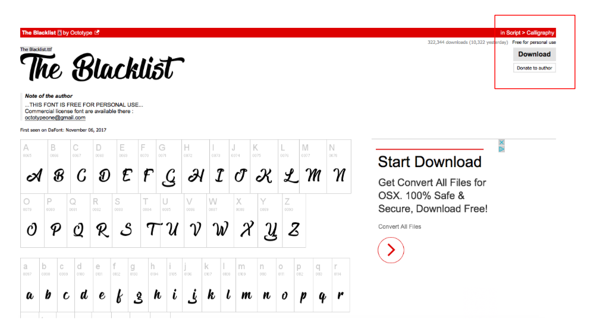
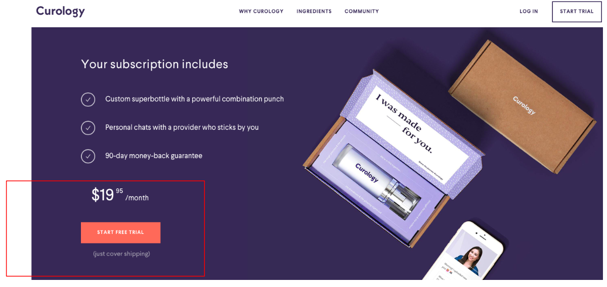
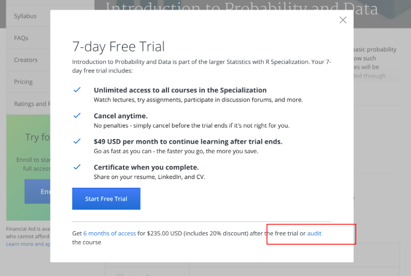
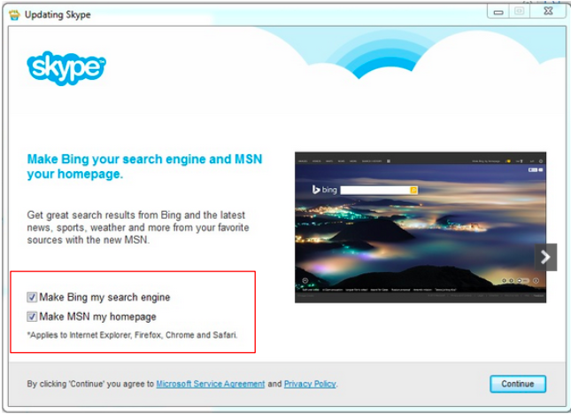
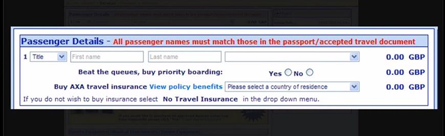

It is 2019, and the issues circulating around identity, surveillance & invasion of our privacy through collection and use of user data without their consent are coming to light. There are numerous instances where the user is deceived or ends up doing something they had not intended to.
The term ‘dark design patterns’ was coined by Harry Brignull in 2010 and he defined the term as “a user interface that has been carefully crafted to trick users into doing things, such as buying insurance with their purchase or signing up for recurring bills.”1 This was 9 years ago, but how aware are people today of its existence? Dark design patterns in UI/UX have been divided into different categories2, some of which are portrayed through the examples later.
Another prevalent dark pattern extensively used in the online world is dark advertising, a type of online advertising visible only to the advert's publisher and the intended target group. This increases the success rate of the publisher's advertising campaign. This form of advertising is commonly found on online social media platforms that make target group identification possible.
I ran surveys and interviewed people to measure the cognizance of these patterns in UI/UX and the online world amongst people. I spoke to around 50 people spanning from different backgrounds, mostly design and engineering students and some working professionals. The primary intent was to understand and evaluate the awareness of dark design pattern in UI/UX, the knowledge of the efficiency of ad blockers used, disguised ads and dark advertising.
Through the survey, I discovered that very few people were aware of ‘Dark Design Patterns’ in UI/UX. Most people claimed that they weren’t aware of the term or its existence at all which was surprising to me. Some users were aware of ad-targeting but very few knew of the tactics and functioning of ‘Dark advertising’. Most people were unaware of the hidden settings in the Ad blockers used by them that dictate the ads shown to them. People assume that their job ends with the installation of the ad blocker on their browsers. I was astonished to learn that dark design patterns which are so common all over the online world, were unknown to most people.
Dark design patterns in varied forms feature prominently in current websites, apps and other online mediums targeting users. It is important for us, as users to understand how certain websites trick us into giving up our privacy. Dark patterns raise many questions about the ethics of design. Especially when it comes to usability, rather than profiting by tricking users.
Have you ever had difficulty opting out of a service or being confused by two very different options portrayed as being similar? Or websites or software installations that have a hidden preset not in your best interest?
Dark Pattern: Disguised Ad
Dark Pattern: Hidden Cost
Dark Pattern: Bait & Switch
Dark Pattern: Sneak into Basket
Have you ever experienced inconvenience in locating the ‘unsubscribe’ button/link on an email or a product website that you would have been accidently or unknowingly subscribed to while navigating or purchasing something completely different? I am sure that at some time you had the experience of a random browser set as your ‘default browser’ while installing or updating particular software.
Have you ever received an email from a supermarket or a store that you often visit, giving you a discount on your favorite chocolate? When you see the offer, are you tempted to purchase it? If you do make the purchase, would you have done so if you hadn’t received this discount?
It is a common practice on websites to suggest numerous relevant products with a particular purchase during checkout. Nowadays, these websites suggest carefully selected products and accessories to the one being purchased by the user. This increases their chance of influencing the user to make extra purchases. Well, this behavior is illegal in the UK3 now! Hidden costs such as undeclared subscriptions, extra shipping charges or extra costs are illegal.
In an attempt to complete your web check-in, have you ever upgraded your flight ticket on accident? Have you ever read the long and confusing user agreements word for word when installing an app, or making a purchase?
There are numerous instances when users are subscribed to an unknown service, or see unknown additional software installed on their systems, or maybe even get upgraded on their flight tickets while unmindfully clicking on the ‘next’ button to get done with the process of the installation or purchase or web check-in. Do you think these user policies are extremely lengthy purposefully? Does the designer who actually writes these policies not know that it is practically impossible for the user to read 5000 sentences of these term and conditions while signing up for the service? Do they know that in an attempt to skim through the process quickly, the user might not notice the hidden ‘install 1 get 1’ software being installed along with an installation? Much of the time companies rely on the users either not noticing what’s going on, or being too busy to do anything about it.
What do you think these are? Are these all accidents or on purpose? It’s been 9 years since the term ‘dark design patterns’ was coined but users are still unaware of the fact that their loss of privacy is not an accident, it is a feature of dark design.
Dark Pattern: Sneak into Basket
It all started when Harry Brignull noticed a low-cost airline using a shady technique to trick users into buying insurance with their flights. He decided to publicize the method to help raise consumer awareness and deter companies from using them.
It is common practice to sell user data mined from by tricking users. It raises questions about the ethics of design as an industry and the ethics of individual designers. Is this manipulation justifiable or necessary in any way?
There are countless examples of websites, social media and platforms that started with a benign intention but are now acting in ways that are clearly harmful to society. The ‘Hall of Shame4’ and the twitter page for dark patterns5 features some astonishing examples of dark design patterns.
The article ‘Cracking the coder’ by Max aptly gives an example of the evolving intentions of Facebook’s ‘like’ button:
“Take the Facebook "like" button. In the words of one of its designers, the button was meant to create a "path of least resistance to engage in certain kinds of interaction." It did that, but also inadvertently created an addictive feedback loop for users, in turn transforming the incentives of the global news media that relied on Facebook for traffic, thereby influencing elections for the worse in several industrial democracies. And that's not all: The "like" button even "gave Facebook a powerful new way to track users." Consider social interaction optimized!”
Because of these changing intentions, the UK has proposed disabling social media ‘like’ feature for children6.
An example of a disguised ad on Facebook can be seen in this screenshot here. How is it relevant to be advertised a tax return app while watching a video teaching the user to make dessert?
Websites today have become better at tricking their users. Once users become aware of certain dark patterns, the site is altered slightly so users are forced to continually reassess the sites they frequent. There are instances when the user may not have the time to do so, which is when they become a victim to these dark patterns. Today, there is an increasing number of websites and applications7 using dark design patterns. For instance, there are many convenient and simple ways to subscribe to the A-List Stubs membership on the AMC theatre website11, but it is extremely cumbersome to get out of the subscription. The only two ways to opt out is to call on a service number where the minimum waiting time before a representative can tend to you is 15-30 minutes or cancelling the membership online through a form where you are supposed to answer a bunch of irrelevant & confusing questions.12
It is very important to be aware and educate oneself on what one might be signing up for, weighing the benefits they get in return. For instance, is it advisable to provide important information such as SSN number to apply for a credit card offered by an agency/supermarket, which would give you heavy discounts? The user needs to weigh the pros and cons of the situation, to understand the repercussions of giving out crucial information over getting discounts?
While many users are unaware of these deceptive dark design patterns, governments around the globe are beginning to ban these practices.
The Deceptive Experiences To Online Users Reduction (DETOUR) Act8 introduced by US senators is a crucial step towards prohibiting the use of “dark patterns” to trick consumers into handing over their personal data.
The European Commission asked Google, Facebook, Twitter, Mozilla and the trade associations representing the advertising sector submit their reports on the measures taken by them to comply with the Code of Practice on Disinformation9 with an intent to keep a check on nudging acts. Code of Practice on Discrimination is an initiative by the European Union to address the challenges posed by the dissemination of disinformation and prevent nudging acts.13
I think it is high time that those shaping the technology today sign The Copenhagen Letter10, a call for better practices in technology.
Dark Patterns - User Interfaces Designed to Trick People. LINK ↩
Categories of Dark Patterns. LINK
‘Sneak into basket’ dark patterns illegal in the UK now. LINK
Dark Patterns. Hall of Shame. LINK
Twitter. Dark Patterns. LINK
UK has proposed disabling social media ‘like’ feature for children.. LINK
How Uber Uses Psychological Tricks to Push Its Drivers’ Buttons, LINK
DETOUR Act. LINK
29 January, 2019. Code of Practice on Discrimination. LINK
The Copenhagen Letter, LINK
AMC theatre website. LINK
EU Code of Practice on Discrimination. Preamble. LINK